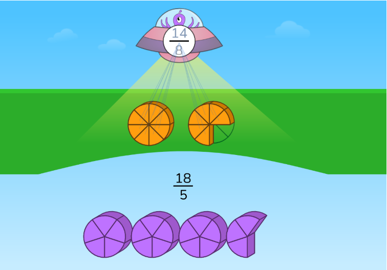

ST Math Games
PushStart Studio, for MIND EducationTechnologies: JavaScript, PixiJS
Platform: Web

ST Math is a supplemental math education program that uses interactive games to teach mathematical concepts through visual learning, problem-solving, and immediate feedback.
PushStart Studio delivered over 100 games for the platform, following MIND Education's technical and design standards.
Contributions & Responsibilities
Worked on the project for over a year as part of a development team ranging from 3 to 8 developers. Progressed from developing simpler games to implementing more complex ones, becoming increasingly familiar with the codebase. This led to being selected by the lead developer to carry out a major refactoring effort, adapting dozens of previously delivered games to a new generation of standards while preserving their support for randomized level generation, accessibility theming, extensive customization, and localization.
Games Development: implemented approximately 7 games from concept to completion within six months, using the client's core framework. Worked both independently and collaboratively, delivering games that met both internal and client QA standards. Consistently recognized within the team for attention to detail and implementation quality.
Codebase Refactorating: refactored dozens of previously delivered games to meet new client standards and support newly introduced platform features. Reviewed and reworked code across the development team, analyzing existing implementations and adapting their underlying logic to meet new technical specifications.
Client Communication & Technical Analysis collaborated with the team to review game specifications, identify edge cases and ambiguities, clarify requirements with the client, and propose technical solutions when necessary.